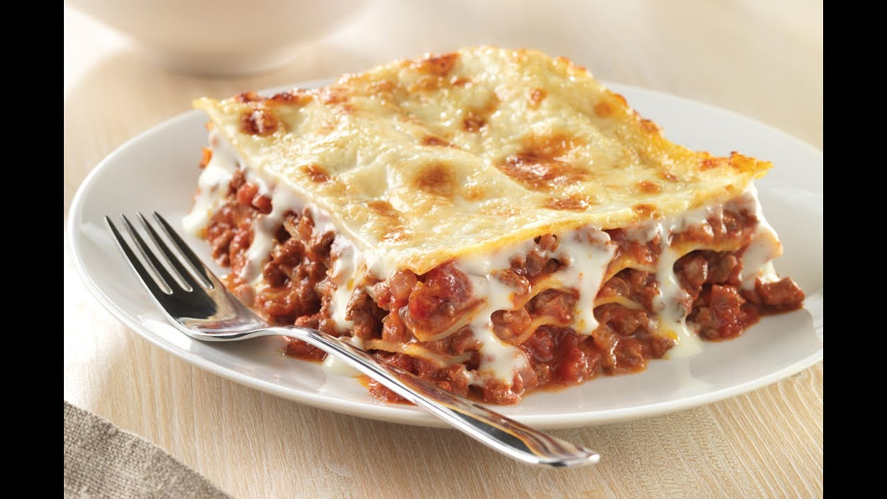

Lasagna ala Marcus

Lasagna is a classic Italian dish made with layers of pasta, meat sauce, and cheese, baked to perfection.
It is a hearty and flavorful comfort food that is enjoyed by many.
Tillagningstid: 60min
Ingredients:
- 9 st lasagneplattor
- smör eller olja att steka i
- 1 gul lök
- 400-500g nötfärs
- 400g krossade tomater
- 1-2msk köttfond alt. 1 st köttbuljongtärning
- 1/2 msk basilika
- 1 tsk salt
- 3 krm svartpeppar
- 1 krm vitpeppar
- ev. ca 0.5 tsk chilipeppar
Steps:
- Ta fram en form som någorlunda passar lasagneplattorna, så att de går att lägga ut och täcker ytan ganska bra.
- Börja med köttfärssåsen. Skala och hacka löken.
- Värm en stekpanna på svag värme med smör eller olja.
- Värm/Stek lök försiktigt och ställ åt sidan när den börjat få lite gul färg.
- Stek upp köttfärsen så den blir ordentligt brynt. Tillsätt därefter salt, svar och vit peppar.
- Tillsätt tomater, basilika och köttfond. Om du vill ha lite chilismak på din lasagne så rekommenderas chilipeppar.
- Låt koka på svag värme, gärna under lock, ca 20 minuter. Gör gärna ostsåsen under tiden.
- Smaka av köttfärssåsen med ev mer salt och peppar.